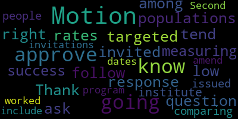
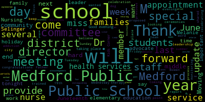
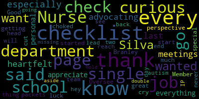
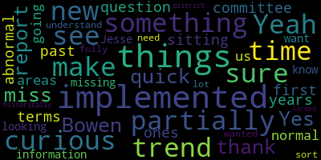

[Lungo-Koehn]: or on your, which is your local cable channel, Comcast 9, 8 or 22 and Verizon 43, 45 or 47. Participants could log or call in by using the following link. Meeting ID is 974-9787-9335. Roll call, please, Member Ruseau.
[Ruseau]: Member Bramley.
[Lungo-Koehn]: Here.
[Ruseau]: Member Graham. Member Intoppa? Here. Member Olapade? Here. Member Reinfeld?
[Lungo-Koehn]: Here.
[Ruseau]: Member Rossell, present. Mayor?
[Lungo-Koehn]: President, seven present, zero absent. I don't believe any student reps are on at this time, so we'll go right to saluting the flag, if everybody may stand, please.
[SPEAKER_03]: I pledge allegiance to the flag of the United States of America, and to the republic for which it stands, one nation, under God, indivisible, with liberty and justice for all.
[Lungo-Koehn]: We have executive session pursuant to General Laws 30A, Section A3. The Medford School Committee will convene an executive session to update us on negotiations with the Medford Teachers Association for Kids Corner, Medford's Teacher Association for Power Professionals, and SEIU Local 888 Medford School Cafeteria employees because an open meeting will have a detrimental effect on the bargaining position of the committee and the chair so declares. Is there a motion on the floor to go into executive session? Motion to enter executive session by member Graham, seconded by member Reinfeld, roll call.
[Ruseau]: Member Bramley?
[Lungo-Koehn]: Yes.
[Ruseau]: Member Graham?
[Lungo-Koehn]: Yes.
[Ruseau]: Member Intoppa? Yes. Member Olapade? Yes. Member Reinfeld?
[Lungo-Koehn]: Yes.
[Ruseau]: Member Ruseau? Yes. Mayor Lungo-Koehn?
[Lungo-Koehn]: Yes. Seven in the affirmative, zero in the negative. We're going to go into executive session and convene back here at approximately 6 p.m. our regular meeting. Is there a motion on the floor to accept the tentative agreement for the cafeteria workers?
[Graham]: Motion to accept the agreement with the cafeteria workers as ratified by the SEIU local area workers, SEIU 888.
[Lungo-Koehn]: Thank you, Member Graham. Seconded by? Second. Member Olaparte. Roll call, please.
[Ruseau]: Member Bradley.
[Graham]: Yes.
[Ruseau]: Remember, Graham.
[Graham]: Yes.
[Ruseau]: Remember and tapa absent. Remember all the party.
[Lungo-Koehn]: Yes.
[Ruseau]: Remember, right. So, yes, member. So yes, Marilyn goker.
[Lungo-Koehn]: Yes, six me affirmative one stepped out motion passes. Thank you for all the hard work of the negotiation team. We have our consent agenda, bills and payrolls, regular school committee meeting minutes, June 3rd, 2024, and recommendation to approve $10,000 donation from the Fidelity Bank Charitable Trust to the Medford High School Robotics Team.
[Reinfeld]: Motion to approve.
[Lungo-Koehn]: Motion to approve by Member Reinfeld, seconded by? Second. Member Olarpade, all those in favor? Aye. All those opposed? Consent agenda is adopted. We do not have reports of subcommittees. We have reports of our superintendent. First up, Dr. Maryse Edward-Vincent for her updates and comments.
[Edouard-Vincent]: Good evening. Good evening. It's hard to believe that we've reached the last full week of school. As we count down the remaining days to summer vacation in single digits, yes, indeed, it is still hard to believe. I do want to provide the committee with a very brief update. Several meetings ago, Ms. Stacey Shulman shared that Medford Public Schools is in the running for adopting a trained therapy dog for the Medford Public Schools. So, as a district, we have moved forward, and miss Schulman will be interviewed at the end of the week, as they are thinking about matches, and the district will provide a letter of support. And we will find out hopefully before next school year ends, maybe somewhere at the midway point, whether or not the Medford Public Schools has been approved to adopt a trained therapy dog that will be part of our Mustang Nation. So I will keep you posted on that, but I just wanted to provide an update that the interview process is taking place. This week in news around the district as a school community, we are looking forward to Wednesday's eighth grade moving on ceremonies, when both of our middle school communities will gather to chair on the class of 2028, as they finish middle school and head to high school. The McGlynn Moving On Ceremony will be held at 5 p.m. followed by the Andrews at 7 p.m. and both celebrations will take place at Hormel. Our elementary schools will also have Step Up Moving On Ceremonies taking place both on Thursday and Friday. So congratulations to all in advance. This Sunday is a very important day. We would like to wish all of our fathers a very happy Father's Day to all dads, stepdads, grandfathers, uncles, other paternal figures this Sunday. Thank you for being role models, caregivers, confidants, and loving family members to our Medford students. Also, as a reminder to our community tuning in for this meeting, there is no school on Monday, June 17th, because of Eid al-Adha holiday. Tuesday will be the official last day of school, Tuesday, June 18th. It's the last day of school for Medford Public Schools. It's a half day. And Wednesday, June 19th is also a federal holiday. So Medford Public Schools will be celebrating that holiday. And Juneteenth commemorates the end of slavery in the United States. It's also known as Emancipation Day. And the word Juneteenth comes from the combination of the words June and 19th. And there will be, in this week's update, there is an event taking place with the city's office of DEI. They are holding a Juneteenth celebration, and I will be sure to have that in this Friday's update. For tonight's meeting, we have several important items before you tonight. In particular, we have the appointment of our Director of Health Services to fill the vacancy left by the departure of our previous director. In addition to that key appointment, you will hear this evening from several members of the district senior leadership team on several important topics. Ms. Bowen will provide a report on the results of DESE's special education tiered focus monitoring review. Dr. Cushing will provide an innovative approach to youth tobacco and nicotine addiction prevention that will soon come before Medford for consideration. Dr. Galusi will discuss summer literacy offerings for our elementary and middle school students. And as this is the last regular school meeting of the school year, we will present a proposed meeting calendar for the committee for next year, which you will discuss. Coming up shortly, I will be making some very special acknowledgements to former school committee member, Melanie Perkins McLaughlin, and to our principal of the Missittuck, Dr. Kathy Kaye, who will be retiring, and Ms. Linda Selinger, our director of Kids Corner, who will also be retiring this year. So I look forward to recognizing and sharing, celebrating all of you during the special acknowledgements. Thank you.
[Lungo-Koehn]: Thank you, Dr. Edward-Vincent. We have a recommendation to approve the appointment of the Interim Director of Health Services, Ms. Jennifer Silva. Dr. Edward-Vincent. Yes.
[Edouard-Vincent]: So, Ms. Jennifer Silva, please come forward. Thank you so much. Tonight, I am very pleased to recommend the appointment of Miss Jennifer silver as the interim director of health services. The silver has worked as a school nurse in Medford public since 2014 distinguishing herself as a talented medical professional. skilled advocate for families and children, and a qualified educator and leader. In addition to a Master of Education in School Nursing from Cambridge College, she holds a Certificate in Healthcare Management from UMass Lowell and a Bachelor of Science in Nursing from the University of Pennsylvania School of Nursing. She is a licensed registered nurse and school nurse in the Commonwealth of Massachusetts and a nationally certified school nurse. She has consistently demonstrated her competence and readiness for leadership during her time in the Medford public schools, including two periods of service as interim health services director during leaves of absence taken by the previous director I am confident that Ms. Silva is ready to lead our health services staff in the coming school year, and I recommend her for appointment this evening.
[SPEAKER_03]: Motion to approve.
[Lungo-Koehn]: Congratulations, Ms. Silva. Thank you. Second. Motion for approval by Member Ruseau, seconded by Member Graham. All those in favor?
[SPEAKER_03]: Aye.
[Lungo-Koehn]: All those opposed? Motion passes. Congratulations.
[Graham]: Memo Graham. I just wanted to say thank you for stepping up and in advance for all of your creative ideas that we've already started talking about. And look in your email box because I have a food allergy question for you in your new role. I'll try to send you something later tonight. Thanks.
[Lungo-Koehn]: If you just wanted your button, sorry.
[SPEAKER_03]: I think the microphone is still on.
[Ruseau]: Thank you.
[Branley]: Nurse Silva. I just wanted to thank you for all that you do. And I want to especially thank you for advocating for nurses these last few meetings. You've been very heartfelt and I just appreciate everything you do from a personal perspective. You started getting choked up and I said, I will never cry here. So don't start that, cut it out, but great job. So thank you so much. Good luck.
[Lungo-Koehn]: Yes, thank you. We have special acknowledgements. First up is former school committee member Melanie Perkins McLaughlin. Let's go. Dr. Edmundson.
[Edouard-Vincent]: Thank you. We are pleased to just have this opportunity to recognize you and thank you, Melanie. Melanie served over four years as an elected member of the Medford School Committee, particularly distinguishing herself as a passionate advocate for equity and inclusion, the needs and priorities of our special education programs, disability access throughout the district, and the voice and perspective of Medford public school parents. Thank you for your dedication and service to the students, staff, and families of the Medford Public Schools.
[Lungo-Koehn]: Melanie, we have a few little things for you, right? We know you miss us terribly every Monday. So we have a special gift for you here. Oh, I have my citation, of course. Be it known to all who read that myself and the city of Method hereby sends our most heartfelt gratitude to you, member McLaughlin, in honor of your years spent on the Medford School Committee, we thank you. On behalf of the entire city, thank you for your service, your kindness, and dedication to all of the students, faculty, and families in Medford.
[SPEAKER_03]: Thank you.
[Lungo-Koehn]: I'm going to turn it over to Doctor Edouard-Vincent, Doctor Kathleen Cape, former now almost former principal of the Mississauga Elementary School.
[Edouard-Vincent]: So for the past 12 years, Dr. K, please come forward. Dr. K has been a vibrant and enthusiastic leader of Medford's Missittuck Elementary School. As an educational leader, organizational manager, and advocate for her school community, she never wavered in cheerful service to her students and families. Thank you for your 12 years of dedication and service to the students, staff, and families of the Medford Public Schools.
[Kay]: I'd like to say thank you, Madam Mayor Lungo-Koehn, and Superintendent Dr. Edouard-Vincent, and esteemed members of the school committee. This is a bittersweet time for me. I'm walking away from my Missittuck family that I have come to deeply care about and for over the past 12 years. I sincerely thank you for putting your faith in me all that time. It has been my honor to serve the students, their families, and the staff at the best school in Medford, the Missittuck. I've heard it said that teaching is a work of heart. Well, then the Mississippi is filled with hardest. I've tried to be an involved, fair, open and honest leader, even serving some of your own children and working with some of your siblings. Together, we have faced many challenges and I think came out stronger for it. I also wish to thank you with all of my heart for appointing Nancy Sherman Hudson as the next Mississippi principal. Sorry, I promised I wasn't gonna do that. Her dedicated colors have shown for the past 11 years, and my job was made easier because she was by my side. Her light shined even more brightly during my long-term absences, and I rested easier then, and I do again now, because I know that my school, our school, will be in such capable, amazing hands for the future. She has truly earned this opportunity, and I only hope that Nancy can find and hire her own Nancy. In closing, and to quote the Winnie the Pooh author A.A. Milne, how lucky am I to have something that makes saying goodbye so hard? Thank you for your time tonight and for the years of support, and I wish you continued success here in Medford, as well as a relaxing summer. I know I'm finally ready to try to have one of those. Thank you.
[SPEAKER_03]: Dr. Kaye?
[Lungo-Koehn]: Yes, we have some flowers for you too. Dr. Kaye, in honor of your well-deserved retirement and in celebration of a long time and valued Medford public school employee, as principal of the Missittuc, on behalf of the entire city, I wish you all the best in your retirement and thank you for your years of service and dedication to the city of Method and our students.
[Kay]: Thank you so much.
[Lungo-Koehn]: And last but not least, we have Mrs. Linda selling jerk director of Kids Corner is also retiring.
[Edouard-Vincent]: Come forward, Miss Selinger and family if you'd like the family to come with you perfectly fine. Ms. Selinger has led Medford's Kids Corner for the past 24 years, shepherding the program through a period of unprecedented growth and success. Kids Corner has been a special place for so many of our Medford public schools and city of Method staff as they entrusted their infants, toddlers and young children to the care and expertise of Linda and her team. Thank you for helping our youngest charges grow for over two decades. Congratulations on your retirement.
[Selinger]: When I first came to Kids Corner 24 years ago, in August of 2000, I was greeted and interviewed by two parent members. It was a parent board back then. And the parents, the teachers ran the program. I didn't realize at that time what an amazing journey professionally that I would go into. I've been here for 24 years. I brought my daughter. She was 2.9. She's now 26 years old. My grandson now comes to the program with me a few days a week. It's been a full cycle for me to have my family here, to have the honor to have worked with great people and families that have entrusted their kids to our care. It's been amazing. It's been an amazing journey that I'll never forget. And I am thrilled to have worked and mentored Ms. Christina Luongo Dudley for the last three years. I am so thrilled that she will be continuing to run Kids Corner, and I know that she'll do a beautiful job. Thank you for everything for the faith of giving me in me and I'm just thrilled to be moving on but sad, sad to be leaving all the kids and the families. Thank you very much.
[Lungo-Koehn]: Also in honor of your well-deserved retirement and in celebration of a long time and valued Medford public school employee, on behalf of the entire city, I wish you a very happy retirement. And thank you also for years of service, kindness, and dedication to the city of Method and our students.
[SPEAKER_03]: Thank you so much. Thank you. Thank you. Do you want a picture with the whole school? Dr. Cushing? Dr. Cushing.
[Lungo-Koehn]: Dr. Cushing, we'll just do one quick one with the committee. Come on up, quick.
[Lungo-Koehn]: Melanie? On special education tiered focus monitoring results, Ms. Joan Bowen, Director of Student Services.
[Bowen]: Good evening. I'm in your packets tonight you'll find the slide deck that I'm presenting tonight, as well as the official report from Ted focus monitoring and a little cheat sheet that I gave everyone regarding the special education and civil rights criteria that I will be referencing in my report tonight. So to focus monitoring. This is conducted by the Department of Elementary and Secondary Education, the Office of public school monitoring, and the purpose is that they want to monitor compliance within a school district in regards to regulatory requirements focusing on special education and civil rights. This is part of every three years we do a self-assessment and then there's an on-site visit. And this on-site visit was this past January 29th and 30th of 2024. In group A, districts and schools are monitored on an alternate set of universal standards and targeted standards every three years. This year, Medford was in group A, which looks at the following universal standards and targeted standards. So we looked at, so we had focus monitoring, looked at student identification, IEP development, Programming and support services equal opportunity and then the targeted standards were specific set of criteria that is will be mentioned later in this presentation, as well as compliance with all the special education legal standards. So like I said, this occurs every three years. In the self-assessment phase, the district reviews special education and civil rights documentation. They tell us what they're looking for. We need to identify the specific documents and what the processes that Medford follows, and then we have to upload them to a security portal where they review them prior to coming out to the visit. So on completion of the self assessment we submitted this to the department for review. And then the onset on site phase occurred. And that is when Desi came out, there were two representatives. They interviewed administrative, instructional, and support staff. They interviewed our co-chairs of CPAC. They also requested additional documents for special education and civil rights prior to their visit. One was the early literacy program that we needed to demonstrate that we're following that regulation and what our process was. They also surveyed parents of students in special education and then they came and they did a review of student records, so they actually pulled 18 to 20 special education binders of students and they go through and they're looking through all of these elements. And once they complete that on-site visit, they provided us with the final report with the findings, and that includes ratings of commendable, partially implemented, implemented, not implemented, and implementation in progress. So in the next slide, you'll see the summary for Medford of compliance in the criteria ratings. So all of the universal standards in special education, they're listed there. Those are the ones that were fully implemented. The three or four civil rights, we were also found to be fully implemented in those as well. And the partially implemented were special education criteria eight, 14, 18A and 20. and I'll explain those a little bit later. And they also ask for indicators. So this is information that we need to provide on a yearly basis to DESE. The first one is indicator 11, and that's initial evaluation timelines. So we have to demonstrate that once a parent requests an evaluation, we're following the timeline that's been put forth to us. We have to evaluate within 30 days. We have to, complete all the paperwork within if the parent requests it reach out to them within five days so there's all these components of compliance that we were found fully compliant in this area. The next indicator can you go back one slide please. Indicator 12 is the early childhood transition. And that's looking at testing our students who are ages 2.9 prior to entering school to see if they require services, if they're found to have a disability. Students at this age are placed in our MEEP program, which is the Medford Early Education Program that we have at our elementary schools. So they look at this, indicator and all the documentation that goes along with that to make sure that we have evaluated the student within the timelines and we were found to be compliant in that area as well. The last indicator is indicator 13, and that's about secondary transitions. And this is talking about, or looking at our students who have graduated from Medford High School, and we have to survey them every single year to see where they're at for the next three years. We have to document that and then send that into DESE as well. And we were found to be in full compliance in the secondary transitions as well. So the areas that we were found partially to be partially implemented are listed here and the first one is the team composition and attendance. One of the messages that we heard loud and clear was that the district was not consistent in what we were doing so it varied from school to school. We always didn't invite a special, I mean, a general education teacher, or if we did and they were absent, or a team member was absent, we weren't consistent in having the evaluation team leader fill out the excusal form and putting it into the student's binder. Special Education 14 review and revisions of IEPs. This is making sure that we hold the annual meetings and three year re-evaluations prior to their anniversary. What they found again, we were not consistent with this. And what it was, we weren't consistent in the documentation of why the meeting didn't happen on time. So what we, we're looking at with the meeting invitation is if it was rescheduled we didn't indicate the reason why it was rescheduled or if we missed a timeline we should have told them ahead of time like we've identified this as an area of need and we need to do a little more professional development and training with our staff but it was in the 18 records it was inconsistent in a few records so that's why there was the finding of partially partially implementing The next slide is 18 a, and that is in regards to our students with autism. There's a specific specific autism checklist that has to be checked off about students with autism and how their disability impacts them and socially emotionally academically. We have different forms that we're using in different buildings. The TED Focus Monitoring person was letting us know that that form should be consistent across the board. And we also have to be consistent in where we document it in the IEP to let us know that this is an area of need and how it's going to be addressed. On a positive note with the new IEP format that's coming out in the fall, this is all embedded into the new IEP format. So it won't be separate forms, it will all be in there and we'll be able to see the identified need and then where we are going to address that in the IEP. So the formats will be talking about that a lot in the fall, but it's really putting all that information into the one document. But we still have to make sure that we're making improvements to make sure it's documented correctly in the IEP. And then the last part is SE20, which in the IEP is the section called non-participation justification. So in that component of the IEP, we have to address why a student is removed from the general education setting and why this is the least restrictive setting for that student. So it's going to vary student by student. What DESE reported was we weren't always include all aspects of why the student needed to be removed. So we need to be a little more clear about the disability related needs. We need to be more specific about the why. And then we also need to be more specific about how we are going to have that student return to the least restrictive program. So those were the information that they provided to us. I did meet with our representative from DESE on Friday afternoon. She has told us what we have to do for the next steps, which is a corrective action plan for those four areas that were partially implemented. She sent me the forms. I'm working on them. They will be submitted to DESE by Friday. And then internally we have to do the work with our evaluation team leaders, our special education coordinators, making sure that we are following the compliance that Jesse has set out, and we have to do a self monitoring process throughout the next year in which we have to upload that evidence to the security portal to let them know that we Got your information, we've made changes. These are the trainings that we've provided to staff. And this is the process that we're following going forward. So I met with the evaluation team leaders last Wednesday and we went through the document. I went through the document today with the special education coordinators and my weekly slate meeting. I had the phone call on Friday with Jesse, and I'm hoping to have the corrective action plan submitted Friday, she will review it, they will tell us if it's accepted, and then we do the work going forward. So that's the Ted focus monitoring I think, for the most part. We did a really good job of documenting all the different special ed criteria. We do have some work to do, and that's what we're starting to do now before the end of the school year, and we will have things put into place for when we return in August. Are there any specific questions regarding TAID focus monitoring?
[Lungo-Koehn]: Thank you for the presentation, Ms. Bowen. That was great. Member Graham?
[Graham]: Just one question. When we look at HAB-Charlotte Pitts, moderator, she-her, she-her, she-her, she-her, she-her, she-her, she-her, she-her, she-her, she-her, she-her, she-her, she-her, she-her, she-her, she-her, she-her, she-her, she-her, she-her, she-her, she-her, she-her, she-her, she-her, she-her, she-her, she-her, she-her, she-her, she-her, she-her, she-her, she-her, she-her, she-her, she-her, she-her, she-her, she-her, she-her, she-her, she-her, she-her, she-her, she-her, she-her, she-her, she-her, she-her, she-her, she-her, she-her a normal part of the practice that like we're monitoring ourselves and there are no surprises when we get to somebody else monitoring us.
[Bowen]: So that's, that's part of the corrective action plan so I have built in timelines so like every month we're going to take a look at the non part we're going to start a working group with the non participation justification statements. So each individual. criteria that was found partially implemented, I have to come up with a plan just like that. So I have to say, this is how the training is going, but this is how we're monitoring ourselves throughout the school year to make sure that that is happening. So I will definitely, I'll be able to bring you information probably in the fall, like where we're at, what we've done so far and what I have found by doing like spot checks or things like that, having the ETLs bring information to the meeting and taking a look at that information there.
[Graham]: Sure. And I think it would be great for us to be able to have some sort of report from you say in like January before we crush into all things budget and end of school year. So it would be, I think if we think about like December, January timeframe would be a good time to hear back from you about what kind of independent auditing you're doing and whether you're finding that we are solving the problem for these and the other measures as well.
[Bowen]: So okay, absolutely.
[Graham]: Thank you.
[Branley]: Member Branley, do we have a special department head at every school?
[Bowen]: So we have Yes, we have special, we have special educators, sorry, specially coordinators who oversee two schools.
[Branley]: Oversee two schools.
[Bowen]: Oh, yeah. So we have, and then we have a coordinator of related services, and then Stacey Shulman, who oversees counseling behavioral health.
[Branley]: So I'm just curious, like who checks those packets at the end, like some of these are just, you know, pages in the IP in this that like we have a checklist and some of all that we go through every single thing, which is my job. So I go through that checklist every single day, you know, so I'm just curious, like when I don't see that autism checklist, I reach back out to the team lead or to the department and said, hey, you know, there's just a page missing. I'm going to hold this aside. So who's doing that double check?
[Bowen]: So it's the the ETLs, that's their responsibility. But we do I think that's part of the compliance process is who's going to double check what they're doing, who's going to ensure that those documents are there. So that's part of the plan that we're putting forward.
[Lungo-Koehn]: Okay, thank you. Thank you. Member Topper.
[Intoppa]: Yes, thank you miss Bowen for this report I just had a quick question just because it's my first time sitting on this committee or these. So the ones that are partially implemented in terms of trends in the past years, is this something that is abnormal normal that were partially implemented in these areas, or just curious to see if there's a trend going on of us. missing the same things or are we or is this all new, so it's all new information that Jesse was looking at.
[Bowen]: So I could go back to maybe six years ago prior to me to see what was found and compare. we just need to do a better job of training and making sure it's a very difficult job that the ETLs have and you know mistakes happen but I want consistency and then I want the coordinators to make sure that this is happening and then I would be the last eyes to make sure that because it's ultimately ultimately my responsibility to make sure that we're in compliance.
[Intoppa]: Yeah I just want to make sure yeah because these things you know like I understand there's a lot but these are sort of things that we need to make sure that we are fully implemented all the time. And I just wanted, I was just curious to see if this is something historically the district has lacked on.
[Bowen]: or if it's- Last time they looked at very few special education criteria and civil rights. This was the big year. I tend to think in three years from now, they'll be looking at more civil rights criteria. So it changes every three years. But I could see if I could find the report. All the reports are public by the way. So even the corrective action plan will be posted on the website. So I could take a look at the previous similar and to see if it was same sort of findings from the last time.
[Lungo-Koehn]: Awesome.
[Bowen]: Thank you.
[Lungo-Koehn]: Thank you, Dr Edwin Vincent.
[Edouard-Vincent]: I just wanted to say thank you to miss Bowen into all the special educators and administrators who really worked on this tip focus monitoring visit that took a lot of time, a lot of meetings CPAC was involved. Teachers staff. As a district I feel like this is a very strong report that we should be proud of. And the fact that there are four indicators that are definitely partially implemented, if you look back at slide six, if it was a reverse, it would have been like everything needs to be done over so the fact that it's a specific area, we have to keep doing what we're doing that as well and then addressing all of the areas that are partially implemented. So I just want to say thank you for all of this work. I mean, to put all of the documentation together took close to a year of, you know, gathering documents. So it's a very, very lengthy process. And I just want to say thank you for your hard work.
[Bowen]: Thank you.
[Lungo-Koehn]: Yes, thank you. Thank you very much, Miss Bowen. Next up, we have a report on tobacco free generation. Dr. Peter Cushing, assistant superintendent. Welcome.
[Cushing]: Thank you, Madam Mayor, members of the school committee. I'm here to present tonight on the tobacco-free generation and almost expand it to the nicotine-free generation. And what it is is a proposal that's moving through boards of health across Massachusetts, really focused on the fact that while years ago we beat back cigarettes, cigarillos, cigars, and other smoking devices that students, that children use, We then opened the door for vaping e-cigarettes. And now, if you're not aware of it, a product known as Zin, tobacco pouches that, I'm sorry, nicotine pouches, they give you a direct hit of nicotine. So the proposal is that, The date would be anyone born after January 1st, I just want to make sure I get it right, 2004, I believe, would be unable to purchase tobacco or nicotine products. The reason why I think this is really important, and normally I'm someone who believes that adults should be able to make their own decisions, the problem is is that 90% of students, according to CDC numbers, 90% of lifelong tobacco users are addicted by the time they're 18. All right, our children don't have a fighting chance. And as someone who represents the Metro Public Schools and other students, in all honesty, we're facing a vaping epidemic in our schools. And requesting your support on this initiative as the Medford Public Schools, myself included, will go before the Board of Health requesting that this pass in Medford. I know that it's passed in Winchester and in other cities and towns across the Commonwealth, and we're moving forward.
[Lungo-Koehn]: Thank you, Dr. Cushing. Member Graham, and then Member Ruseau.
[Graham]: I see here that you're also requesting that we support an administrative action review to strengthen school district tobacco policies to ensure that e-cigarettes, vaping, nicotine pouches are fully addressed in a preventative and restorative approaches that focus on health outcomes consistent with our mission to support students in the schoolhouse and provide opportunities for community dialogue on health risks of all tobacco and nicotine use. and encourage campuses to promote health messaging to educators, students, and staff. I am fully on board with that, but I want to remind everybody that we have a suspension policy that limits our use of out-of-school suspension as a disciplinary measure to a series of criteria that were laid out in the memo by the administration. And this is not on the list. And I just want to call that out because I have heard situations where students are being suspended for that reason. And I just want to say that suspending a kid so they can go home and vape is not the answer to tightening up our policies. So I'm in support of this and happy to otherwise make a motion to recommend that we support the tobacco and nicotine free generation.
[Lungo-Koehn]: Motion by Member Graham, seconded by Member Ruseau. All those in favor?
[Cushing]: Aye.
[Lungo-Koehn]: All those opposed? Motion passes. Thank you, Dr. Cushing.
[Cushing]: Thank you.
[Lungo-Koehn]: We have summer literacy offerings for grade 1 through 5, and 6 through 9 report is going to be given to us by Dr. Suzanne Galussi, assistant superintendent. Welcome.
[Galusi]: Good evening. I'm just here to update you. Dr. Chiesa had applied a couple months ago for the Vacation Acceleration Academy Grant through Governor Healey's office and the Department of Education. And on May 2nd, Medford Public Schools was awarded with that grant. The sum will be $42,000. And so I'm just here to let you know and update you on how we are going to fulfill that grant. So the grant is used for acceleration during vacation periods that can be summer, or that could be one of the vacation weeks we are electing for this summer. to ensure that we are minimizing some of that literacy growth that we've seen in our students. And we are really focusing on the elementary levels, as well as the transitional grades of six and nine. With that $42,000, we will hire licensed educators, Medford Public School educators. And we have several that have already given interest. Of that list will just include elementary classroom teachers, licensed reading teachers, at the secondary level English teachers, and then part of this program, I will get into the structure of it in a little bit, but part of the grant highly suggests that we have some specialist activities for students. So there will also be art-based activities and that will include the inclusion of physical education teacher and an elementary nexus teacher, and also coverage by school nurse. Additionally, paraprofessional or behaviorist support may be included in the staffing needs. So this is going to be a one-week program. and it will be housed at the McGlynn School Complex. And last week on Friday, caregivers received the invitations from me to register their students if they are interested. It will run the week of July 29th to August 1st, and it's a full day program. So instruction will run from nine to two with drop off at 8.45. Pick up a 215 a lunch in a recess period and a specialist period will be included and students will receive if they would like free breakfast and free lunch will be offered to the students. Next slide, just to speak about the format. At the elementary level, there are two lanes for this grant opportunity. One is the early literacy program, and the other is the ELA program. So per the grant requirements, the early literacy program is targeting rising students in grade one to three, that's currently students in grades K through two. The invitations that, some families received for their children to participate in this program. The primary focus of data was DIBLS. We looked at the DIBLS scores throughout the school year with a particular focus on the middle of the year and the end of the year results. And then therefore the, excuse me, the curriculum that will be used for working with the students this summer will be our existing curriculum of the inter-reading, ECRI, with some supplemental Lexia Core 5. The ELA program at the elementary level is for students rising grades four and five, so that's your current third graders and fourth graders. Again, the primary form of data that we used for invitations was DIBLS, but we also looked at MAP growth scores as well as MCAS data because we have that for the students. Again, the primary focus is on developing, continuing to develop those grade-level literacy skills that are gonna help ease their transition to the next year. The curricular is the same. It's the inter-reading program, as well as supplemental materials that we use, Lexia Core 5, NewZella, and some MPS-created materials. And then for students in those transitional grades of rising grade six and rising grade nine, again, if DIBELS was a component, we did review DIBELS data. We have them for those current fifth grade students that are moving on to sixth grade. And DIBELS is also used, as previously mentioned, for students receiving intervention at the middle school level. So when applicable, we used DIBL scores as well as MAP growth data and MCAS data to determine invitations. Again, the focus is the same on looking at the grade level skills that students need with looking at those anchor standards that are going to assist the students moving forward. So the curriculum materials are the existing MPS materials that we utilize, as well as looking at some of the summer reading components to assist students with that, as well as the supplemental materials of the Alexia Power Up and New Zella. And if you have any questions, I would be happy to answer them. Yes.
[Lungo-Koehn]: Question from the chair, if you don't mind. Yeah. Who would be invited to partake in this? as far as who will be invited, I guess.
[Galusi]: So we used the student data in order to determine the invitations for students. That's part of the grant per the Department of Education, is to make sure that your invitations are using benchmark data as well as statewide data. So we used, DIBLS was primary at the elementary level, and then we also used our MAP growth data, MCAS data, That's all of our benchmark data.
[Lungo-Koehn]: And if they haven't gone out already, when will parents or guardians get the invitation?
[Galusi]: So they went out on Friday. The emails went out. I personally sent them all. They went out on Friday, so it would be from my email for anybody at home listening. They could search my email, or they could reach out to me directly. I've already been corresponding with a few parent questions here or there, and there's an attached embedded survey link to register students. And how many students total? So the grant regulations, where we are looking to see, we know that the invites range per grade level. I can provide that data to you if you would like. And we're waiting to see what the participation will be. The requirement for the grant is that each classroom needs to have no more than a group of 10 to 12 students. So our staffing will fluctuate depending on the response for participation that we get. We have healthy staffing interest right now, which is wonderful. Great, thank you.
[Lungo-Koehn]: Member Ruseau?
[Ruseau]: Thank you. Around the invitations to parents, caregivers, I suppose there's no way to confirm receipt, of course, and spam filters and all the other things that get in the way of our actually getting to an email. Assuming that we're not inviting 1,000 people, can we include in the process to investigate any affirmative declines to understand why. Because I think that's something that, you know, understanding why we've offered a service, you acknowledge that we've offered the service, and then you say, no, I think it would be helpful to understand why so that we can perhaps in a future year, it'll always just be useful information in general, because we don't have a lot of opportunities for that kind of information. but really understanding why people would decline it. Cause I'm sure that's going to happen. I mean, maybe they're away on vacation that week or. But there are plenty of reasons for which we can do nothing about and that's fine. But are there reasons like transportation or they have to watch a sibling during the day? Those are the kinds of things I think that could be useful information. And as we think about students that have been identified as needing services, making sure they can get them is super important. So thank you.
[Galusi]: Much agreed, I can work on that, absolutely. And I think the partnership with school leaders, as well as the reading teachers at the elementary level and through with Dr. Nicole Chiesa, I think we can easily get that done. Because I think often, I don't typically, I think the bigger piece is that some just don't participate. Um, so we'll have to have that outreach to make sure we're understanding why I can do that, as well as make sure that I use that same group of people to further make further follow up on the invitations.
[Reinfeld]: All right. Thank you.
[Galusi]: Thank you, Member Reinfeld.
[Reinfeld]: I was going to ask about targeted follow-up, because we know that response rates tend to be low among some of your invited populations. My other question is, how are you going to be measuring the success of the institute? Is it comparing the people who did it and didn't, who were all issued invitations? How do we know that this program worked?
[Galusi]: Yes. No, that's a great question. We've definitely been talking about that. So there will be pre-assessments as well as post-assessments. It's just a one-week program. But we are going to be utilizing a pre-assessment and a post-assessment. And then I think we've seen the data that we have at the elementary level around dibbles. We've been going classroom by classroom and really looking at the growth that we've seen, which has been tremendous, especially at the lower levels. So I think we'll be able to kind of see a little bit of that. What we're hoping to see is a little bit of that bump which is why we're targeting the week that we're doing this kind of right in the middle of the summer, which that last week of July into that first, we noticed that we're kind of hoping to like catch that right in the middle and not wait through the whole entire summer to offer this this opportunity. So. Fingers crossed, because we also have the end of year dibbles data and and then the beginning of the year dibbles data. So we're hoping that we're going to see that progress maintained with that check in the middle of the summer. Thank you. Yeah, thank you.
[Lungo-Koehn]: Thank you so much, Dr. Glucy. Yeah, no problem. Thank you very much. Thank you. We have a recommendation to approve. Mayor? Yes, Member Graham.
[Graham]: Motion to suspend the rules and take item 2024-28 out of order.
[Lungo-Koehn]: Motion to suspend the rules by Member Graham, seconded by?
[Reinfeld]: Second.
[Lungo-Koehn]: Member Reinfeld, all those in favor? Aye. All those opposed? We have the second reading for the budget presentation and schedule. Motion to waive the reading. Motion to waive the reading by Member Graham, seconded by Member Intoppa. All those in favor? Aye. All those opposed? Reading is waived. Motion to approve the second reading. Motion to approve the second reading by Member Graham, seconded by Member Intoppa. All those in favor? Aye. All those opposed? Second reading is approved. Is there a motion to revert? I have a motion to revert back to the regular order of business. I remember Graham seconded by?
[SPEAKER_03]: Second.
[Lungo-Koehn]: Member Intoppa, all those in favor? Aye. All those opposed? We have our seventh and final report of the superintendent recommendation to approve the school year 24-25 school committee meeting calendar. Dr. Edouard-Vincent.
[Edouard-Vincent]: Good evening, I have shared with you the proposed dates for next school year. All meetings at this point in time scheduled to start at 6pm. And I'm looking for the approval of the committee if these dates seem like they will work for the committee.
[Reinfeld]: Motion to approve.
[Graham]: Mayor, I just had a couple of questions or potential amendments. Sarah Silver, PB): Um, so I would like to maybe amend the motion to approve with the addition of a meeting on Monday, June 9 Sarah Silver, PB): We inevitably cannot get out of June with two meetings. It's just not possible. So I would rather see us have the time scheduled and decide we don't need it, then be left scrambling for a date, which we're actively doing right now to do the budget. And we're like running out of days in June. And there's a lot of people like waiting with bated breath to hear what we have to say. So one amendment would be the addition of June 9th. And I would also like to propose that we put the two budget hearings on this calendar. And my proposal would be Wednesday, February 26 and Wednesday, April 30. And I picked those Wednesdays because those are the weeks immediately following February and April vacation. So I feel like a Monday budget meeting would A, be really hard for the administration to get ready for, but B, would be really hard for people to motivate to get to from a public perspective. So in keeping with the resolution that we just passed, those would work within the timeline that we established, but I would like to see them just be added right to the calendar so that we can all put them in our calendars. And if there's something that we decide that we don't need, That would be amazing. But also we sort of crush into the end of the year and there's not enough time to do all the things that we need to do. So I was hoping we could maybe add those few things so that we can chart a slightly better, less chaotic course next year. It would be 226 for the budget hearing. A second budget hearing sort of if required on 430. And I would say if required, because there's some language about when we would do a second budget hearing. And whoever is typing, could you just put if required right next to that? Is it you, Dr. Eby? It's Lisa.
[Lungo-Koehn]: It's Lisa.
[Graham]: Oh, I was like, who's typing? Thank you. And then the other budget meeting to add to the calendar would be June 9th.
[Reinfeld]: I'll amend my motion to include those dates.
[Lungo-Koehn]: Second. Or I accept the amendment, whatever it is. Motion for approval as amended by Member Reinfeld, seconded by Member Graham.
[Graham]: That June 9th wouldn't be a budget meeting. It's just a regular meeting.
[Lungo-Koehn]: Could you put it as either or regular slash budget? Yeah, we could do that. Member Intoppa? Perfect. Motion for approval as amended. All those in favor? Aye. All those opposed? Calendar has been approved as amended. There are no presentations of the public. No new business, no reports are requested. We have condolences. The members of the Medford School Committee express their sincerest condolences to the family of Livio the dice father of Alyssa pillion paraprofessional at the Brooks Elementary School. And the members of the medical school committee expressed their sincere condolences the family of Julie O'Neill Julie served as an elementary school teacher for over 40 years at the Medford public schools feel may rise for a moment of silence please. Thank you. I think we are, as Member Graham mentioned, working on a final budget approval date to be determined. And is there a motion to adjourn? Motion to adjourn by Member Reinfeld, seconded by...
|
total time: 51.21 minutes total words: 1197 |
total time: 1.77 minutes total words: 275 |
total time: 5.58 minutes total words: 873 |
total time: 0.41 minutes total words: 82  |
|
total time: 9.9 minutes total words: 1323  |
total time: 0.79 minutes total words: 192  |
total time: 0.65 minutes total words: 149  |
total time: 9.37 minutes total words: 1305 |
{kind=link}
{kind=link}
{kind=link}
{kind=link}
{kind=link}
{kind=link}
{kind=link}
{kind=link}